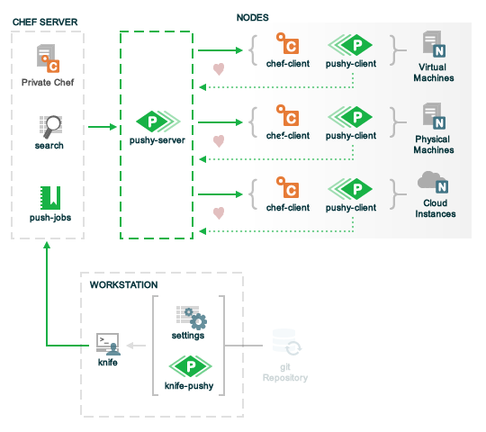

Warning
DRAFT
Pushy is a tool that allows jobs to be run against nodes in a Chef organization independently of the typical Chef run. A job is an action or a command to be executed against a subset of nodes; the nodes against which a job is are determined by the results of a search query made to the Chef Server. Pushy is an extension of the Chef Server API that uses a Ruby client to initiate all connections to the Chef Server. Connections use the same authentication and authorization model as any other request made to the Chef Server. A Knife plugin is used to initiate job creation and job tracking.
Warning
Pushy is only available when running Private Chef.
Pushy has three main components: a server, a client that is installed on every node in the Chef organization, and one (or more) workstations from which job messages are initiated.
All communication between these components is done with the following:
The following diagram shows the relationship of Pushy components with the rest of Chef:
The Pushy server is used to send job messages to one (or more) managed nodes.
The Pushy server listens for heartbeat messages from each Pushy client. If there is no heartbeat from a Pushy client, the Pushy server will mark that node as unavailable for job messages until the heartbeat resumes.
The Pushy client is used to receive job messages from the Pushy server and to verify the heartbeat status of the Pushy environment.
The Pushy client listens for heartbeat messages from the Pushy server. If there is no heartbeat from the Pushy server, the Pushy client will finish its current job, but then stop accepting any new jobs until the heartbeat from the Pushy server resumes.
A workstation is used to manage Pushy jobs, including maintaining the push-jobs cookbook, using Knife to start and stop jobs and to manage job lists.
The push-jobs cookbook is used by Pushy to install the Pushy client on managed nodes, and then set up the Pushy client to run as a service. In addition, Pushy relies on a cookbook attribute to manage the whitelist, which is a list of jobs (and commands) that are available to Pushy.
A whitelist is a list of jobs and commands that are used by Pushy. A whitelist is saved as an attribute in the push-jobs cookbook. For example:
default['push_jobs']['whitelist'] = {
"job_name" => "command",
}
The whitelist is accessed from a recipe using the node['push_jobs']['whitelist] attribute. For example:
template "name" do
source "name"
...
variables(:whitelist => node['push_jobs']['whitelist'])
end
Use the knife exec subcommand to add a job to the whitelist. For example:
$ knife exec -E 'nodes.transform("name:A_NODE_NAME") do |n|
n.set["push_jobs"]["whitelist"]["ntpdate"] = "ntpdate -u time"
end'
where ["ntpdate"] = "ntpdate -u time" is added to the whitelist:
default['push_jobs']['whitelist'] = {
"ntpdate" => "ntpdate -u time",
}
Pushy sends two types of messages: heartbeat and job.
All heartbeat messaging is done using ZeroMQ and all messages between components are formatted as JSON.
A Pushy job may not be completed if either the Pushy server or a certain number of nodes are unavailable. (The number of nodes that may be unavailable is determined by the quorum setting when the request is made.)
All job messaging is done using ZeroMQ and all messages between components are formatted as JSON. ZeroMQ (and its DEALER / ROUTER pattern) is used to send job-related messages between a managed node and the Pushy server. A job message can be queried and reused.